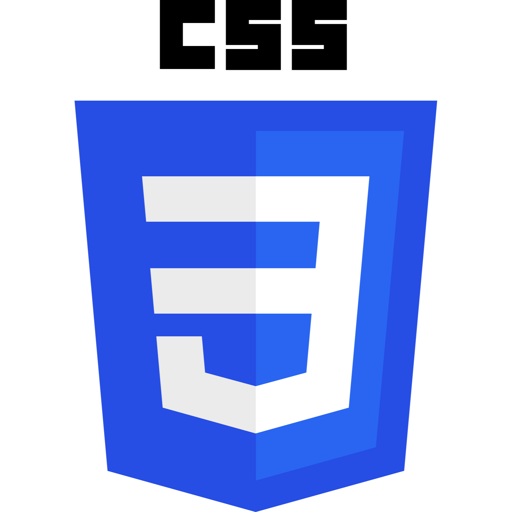
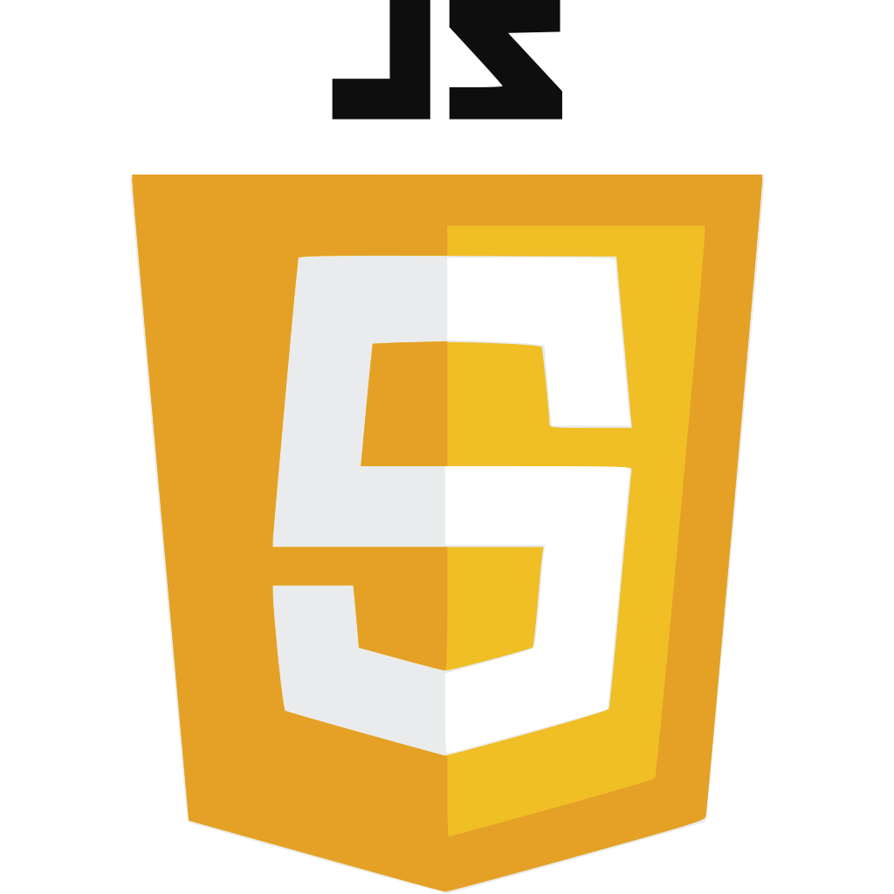
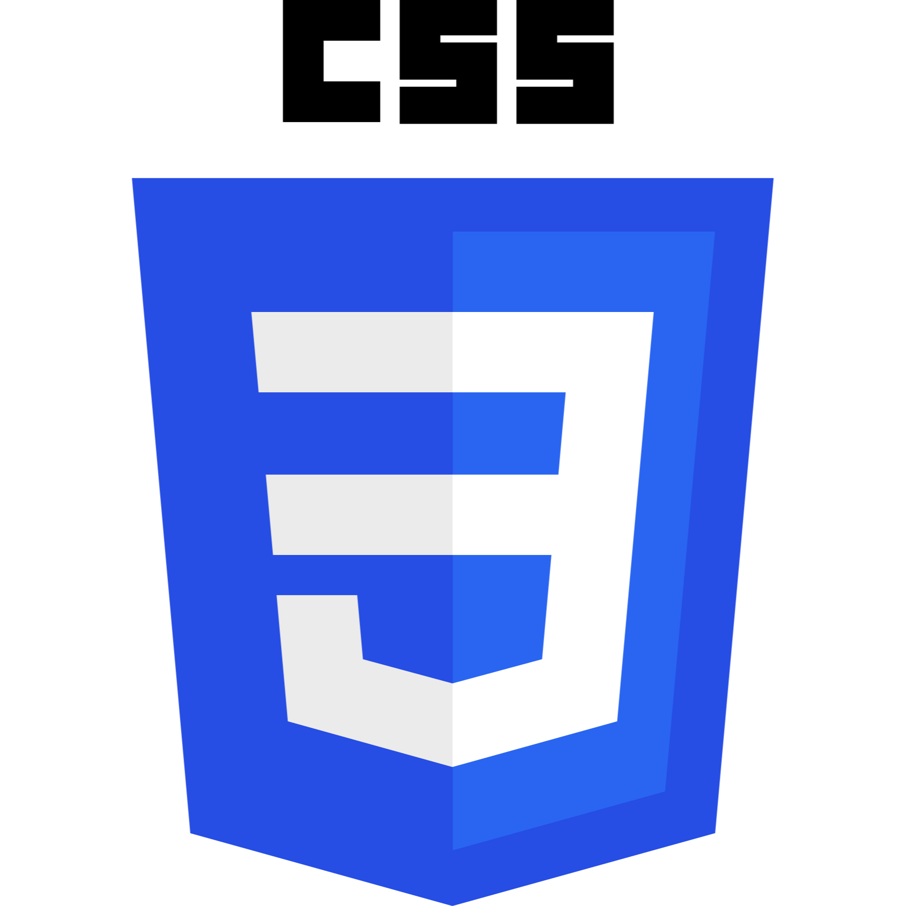
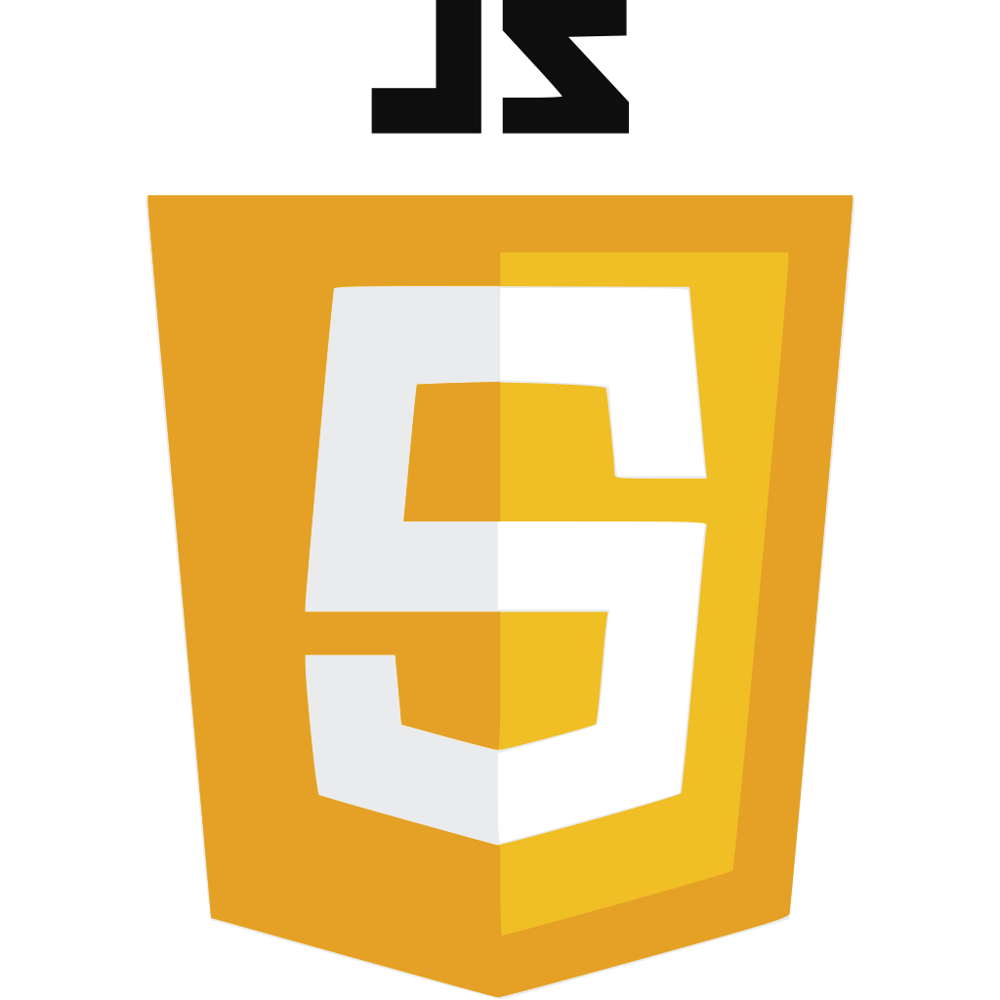
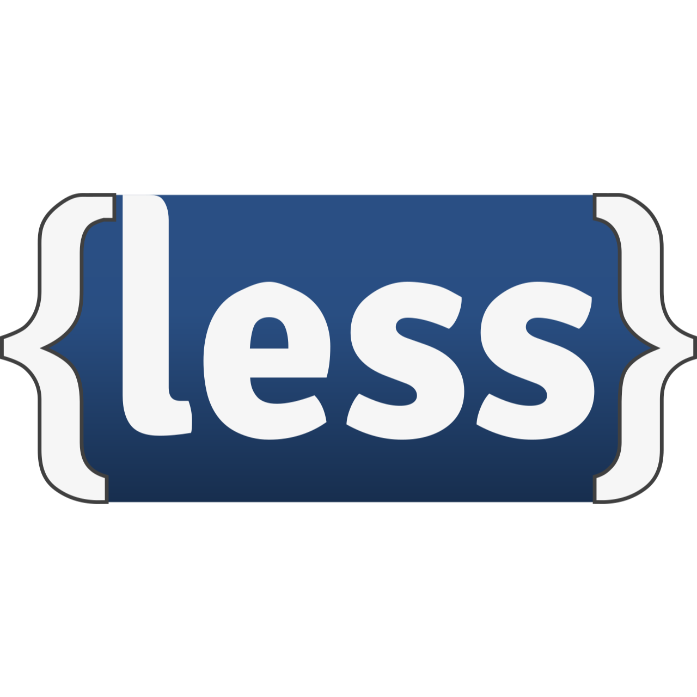
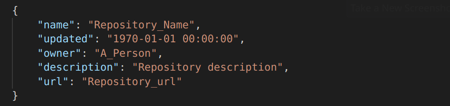
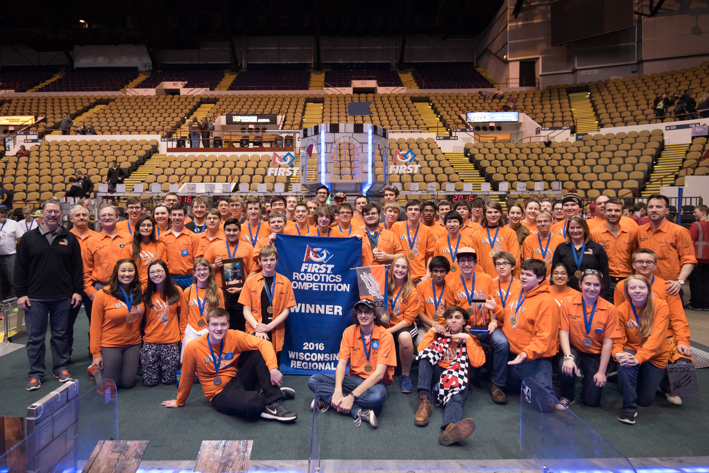

/this site
This website is a personal site I created because I wanted to learn more about Node.js and AWS. Although it was mainly a learning experience, I still wanted to make it look modern and presentable, so I learned the basics of CSS and used a starting template that I found after some searching. The code which drives the website can be found in my GitHub project, TestWebServer. I want to maintain and update this website as I go - adding new features as I learn new things. Currently, the frontend of the website is comprised of HTML, JavaScript, CSS, and LESS. Bootstrap 3 and Font Awesome 4 are used to help style the website, and jQuery is used to communicate with the backend. The backend is entirely run on JavaScript in Node.js using the built-in HTTP and HTTPS modules. It also uses the external node-static module from Node package manager (npm). I am currently hosting the webserver on an AWS EC2 instance.
 





The 'Home' and 'Projects' tabs of this website feature my Node.js app called GitGet which generates a JSON list of my GitHub projects and some information about them. The format of these JSON objects can be seen below. The app queries the GitHub API using the @octokit/rest module from npm and gets the list of repositories from my GitHub account. Next, it receives information about the projects in JSON and sorts them by Most Recent Commit. A script on the website uses jQuery to get and display the JSON on the website. I want to add functionality to allow a user to sort the projects differently and also add some functionality to display the language makeup of the project.

/me
My name is Cade Wormington, and I am a software developer. Most of my experience is in backend and systems, but I am currently developing my frontend skills. In December, I graduated from the University of Wisconsin-Madison with a Bachelor's of Science in Computer Science. Since then, I have been expanding my skillset and learning languages and platforms which I previously had little experience with. In addition to this, I have started some new, more complex projects and have diverged from the simple school projects which I worked on in the past. School projects are perfect for learning and exploring specific concepts, but they often lack the complexity and usefulness that real-world applications demand. The general goal of my future projects will be to apply common ideas and other systems that are often used in the industry.

I started my programming journey in high school after joining BEAST Robotics, my high school's robotics team. This team fostered my interest in computer science, and it also taught me the basics of programming. While on the team, I was able to learn some of the fundamentals of team programming as well - primarily an Agile-like communication system and version control. As I continued with the team, I realized I enjoyed software engineering enough to pursue it in college. I was accepted into the University of Wisconsin-Madison, and I declared my major to be Computer Science shortly after. A list of some of the relevant classes which I completed while at UW can be found on the Home page or on my resume below.
If you would like to know more about my background, my resume can be downloaded below.
Resume.pdf
Note: This link will redirect you to Google Drive.